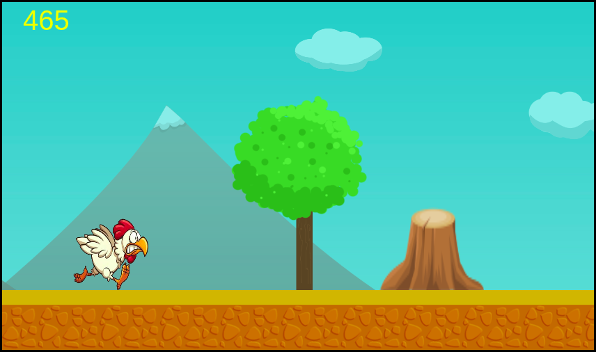
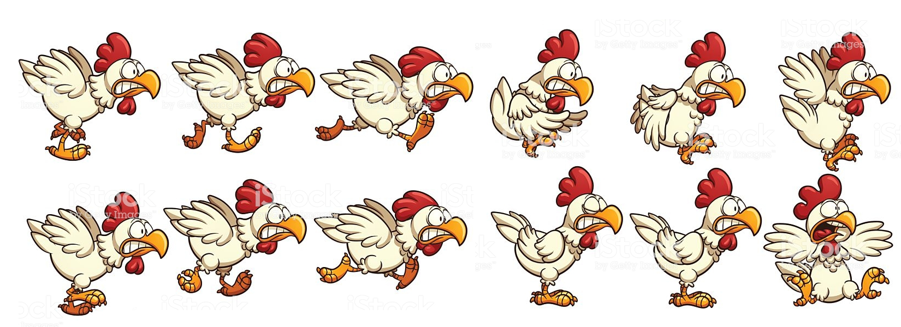

Como é o Jogo?
Chicken running é um jogo estilo corrida infinita que pode ser jogado em um navegador e seu objetivo em jogo é atingir melhores pontuações pulando dos obstáculos que vão surgindo aleatóriamente
Sua Construção
Para construir o jogo foi usado o sublime text 3 como editor de código-fonte e foi necessário um conhecimento básico de algumas linguagens de programação e marcação de texto
Linguagens de marcação de texto:
Linguagens de programação:


Direção de Arte
As imagens do cenário foram retiradas do site Game Art 2d e os sprites do personagem foram retirados do google imagens e editados no photoshop
Obstáculos do Jogo
Na versão 1.0 há 3 obstáculos:
Caixa

Pedra

Tronco